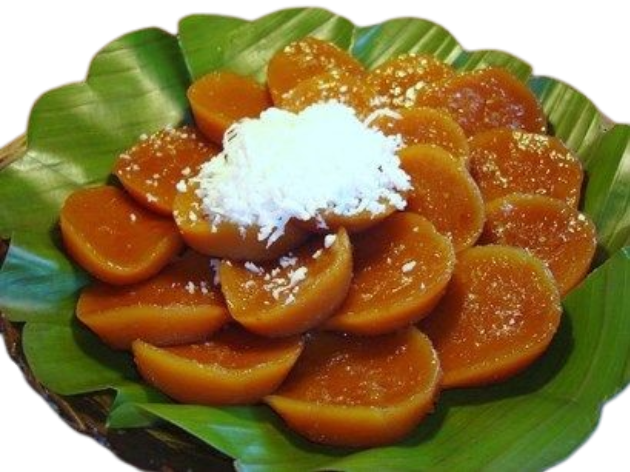
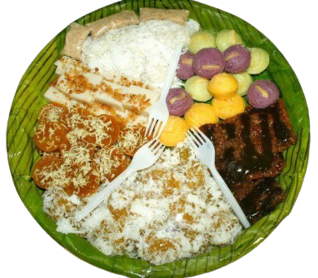
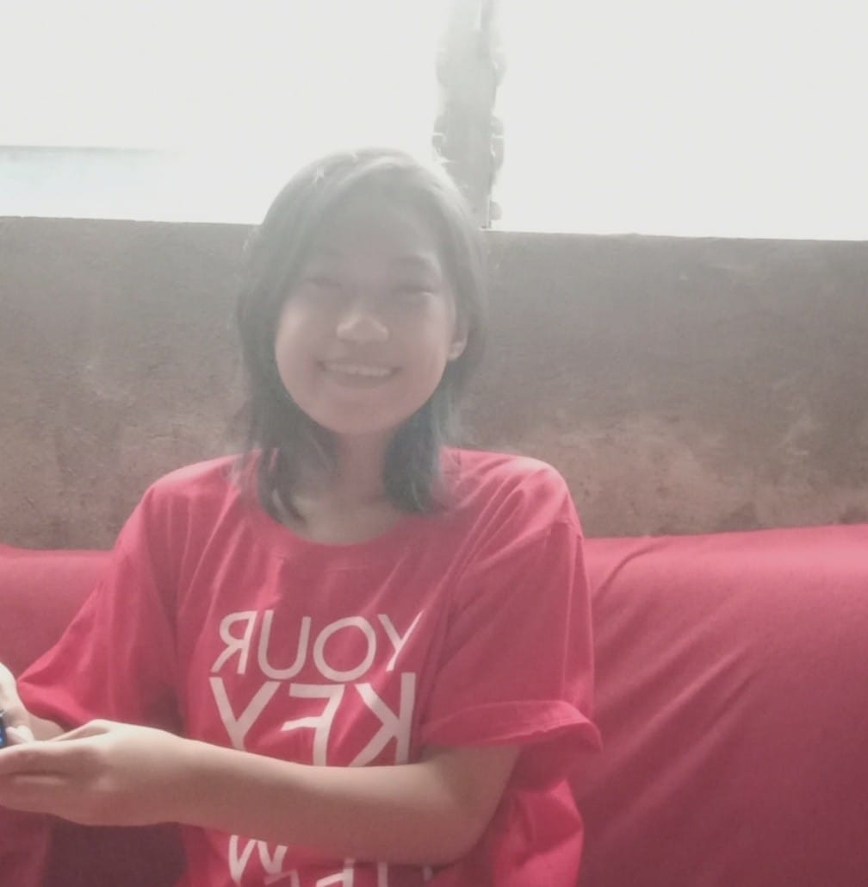

Filipino kakanin are local rice or root crop delicacies included in the daily consumption
of Filipinos as snacks in between meals; however, the traditional methods and ingredients
utilized with this kakanin are gradually fading away because of modernization.


Customers Review
ReyAnn C Balo
"The kakanin was absolutely delicious! Reminded of my lola's cooking."
⭐⭐⭐⭐⭐

Kristina Ponteras
"Presentation and flavor were perfect. Highly recommended!"
⭐⭐⭐⭐⭐
Gigi Hadid
"Great variety and authentic taste. I'll definitely order again!"